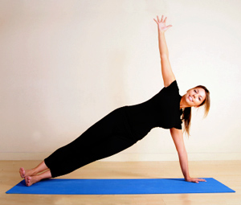
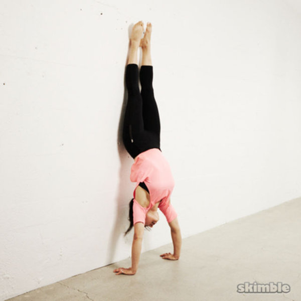
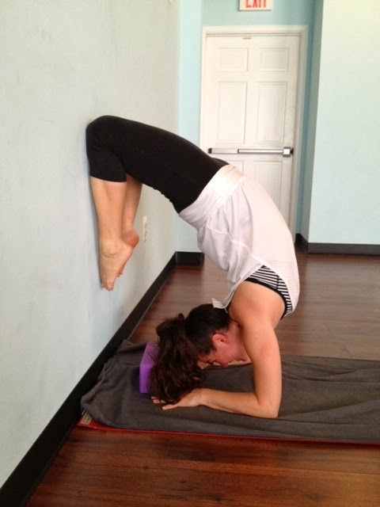
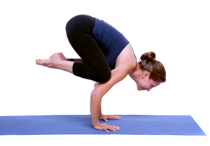
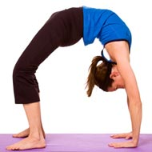
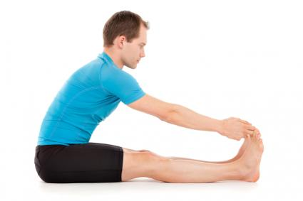
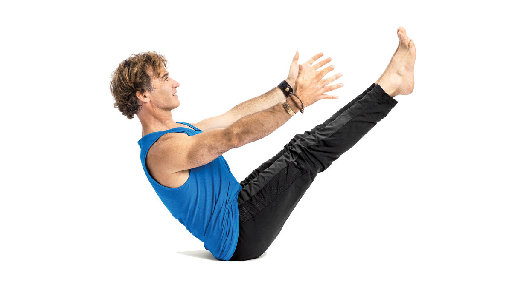
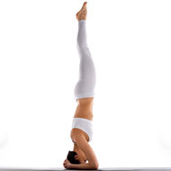
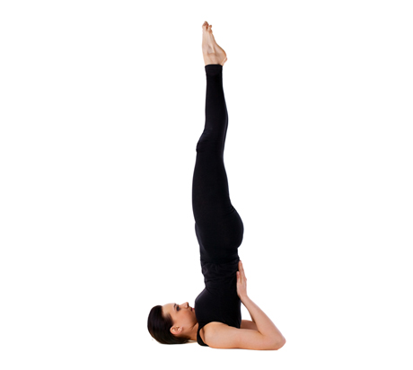

How to do it: Stand with feet together. Ground down evenly through feet and lift up through the crown of your head. Lift your thighs. Lengthen up through all four sides of your waist, elongating spine. Breathe easy.
How to do it: Start in mountain pose. Raise arms and reach up through fingers. Sit back and down as if sitting into a chair. Shift weight toward heels, and lengthen up through torso.
How to do it: Place hands on the back of a chair with palms shoulder-distance apart. Step feet back until they align under hips, creating a right angle with your body, spine parallel with the floor. Ground through feet and lift through thighs. Reach hips away from hands to lengthen the sides of your torso. Firm your outer arms in and lengthen through the crown of your head.
From all fours, walk hands one palm's length in front of you. Tuck toes and lift hips up and back to lengthen your spine. (If you're inflexible, keep your knees bent in order to bring your weight back into the legs.) Press into your hands, firm your outer arms, and reach your upper thighs back toward the wall behind you.
How to do it: Stand with feet wide, about 3 1/2 to 4 feet apart. Turn left foot in slightly, and turn right foot out 90 degrees to the side. Line up front heel with the arch of your back foot. Bend front knee to 90-degree angle, tracking the knee with the second toe to protect the knee joint. Stretch through your straight back leg and ground down into back foot. Reach arms out to shoulder height, shoulder blades down and palms wide, and gaze over the front fingers.
How to do it: Stand with feet wide apart. Turn left toes in slightly and rotate right thigh open until right toes point directly to the side. Keeping both legs straight, ground through your feet and pull your thighs up. Spread arms wide at shoulder height, roll your front thigh open and hinge at the front hip. Lengthen your spine toward the front foot and release bottom palm to the front ankle, a yoga block (placed outside the front ankle), or the seat of a chair.
How to do it: Start in mountain pose. Bend one knee, using hand to bring foot into upper inner thigh. (If this feels difficult, bring the foot to the shin below the knee, or use the wall for balance.) Press into your standing foot, and lengthen up through the crown of your head.
How to do it: Lie faceup with knees bent, feet flat on the floor, and arms at sides. Keep feet parallel and hip-width apart, heels stacked under knees. Roll upper arms open to expand chest. Ground through outer upper arms, root down into heels, and reach knees forward to lift the hips off the floor. Shimmy your shoulders under your chest and interlace your fingers. (Hold onto the sides of your yoga mat to create more space if your shoulders are tight.)
How to do it: Sitting on the floor, bend knees and open them wide like a book. Join the soles of your feet together while sitting upright. Place fingertips on the floor directly behind you and lengthen up through the entire spine. You can also hold onto ankles and hinge forward at hips. (Sit up on blankets if inner thighs are tight.)
How to do it:Start in downward facing dog. Shift forward so your shoulders are stacked over wrists. Reach heels back as you lengthen the crown of your head forward. Ground down into hands, pull up through arms, and spread collarbones away from the sternum. Lift the front of your body up to support the pose.
How to do it:From plank pose, shift forward slightly. Bend elbows to a 90-degree angle with upper arms parallel to floor. Ground through palms and spread collarbones wide. Lift shoulders away from the floor as you pull your front ribs into the spine. Lift upper thighs toward the ceiling as you reach your tailbone toward your heels. Gaze forward.
How to do it:Lie facedown on the floor. Bend elbows and place hands on the mat in line with lower ribs. Reach back through your legs, and pull yourself forward and up to straight arms. Lift thighs and knees away from the floor, spread chest wide, and lift breastbone up.
How to do it: Start in triangle pose. Bend front knee, tracking it with your second toe. Step back foot in and walk bottom hand approximately 12 inches in front of you. Line up thumb with pinky toe. Shift your weight into front foot and lift back foot off the ground. Reach back leg strongly toward the wall behind you, then raise up top arm. To challenge your balance, rotate your chest up toward the ceiling and gaze up at your top hand.
How to do it:Start in downward facing dog. Step one foot forward between your hands. Turn back foot out approximately 45 degrees and ground into back foot. Line up heel to heel, or slightly wider. Bend front knee over front ankle while you stretch through straight back leg. On an inhale, lift torso and arms up to the ceiling.
How to do it:From warrior I, hinge forward at the hips and rest your abdomen on your front thigh, arms alongside ears. Step back foot in and shift your weight into your front foot. Lift back thigh up and reach through back heel. Spin inner back thigh up to the ceiling. Press palms together and gaze forward at hands. (To modify, take arms alongside hips, or place hands on the floor or on blocks under shoulders.)
How to do it:Start in mountain pose. Step left foot back and place it flat on the floor at an approximately 45-degree angle. Ground down into both feet and lift up through both thighs. Lift arms up to shoulder height. Turn arms in slightly and join the palms to touch behind upper back. (To modify for tight shoulders, join fists to touch, grab opposite elbows, or place hands on the hips.) Hinge forward at your hips and lengthen spine over front leg. Lift shoulders away from the floor and spread chest wide.
How to do it:Come to your forearms and interlace fingers, keeping elbows shoulder-width apart. Tuck toes, lift knees off the floor, and reach hips up and back. Allow head to hang off the floor. Ground down into forearms and lift shoulders away from the floor.
How to do it:Lie facedown, then lift chest, arms, and legs off the floor. Bend knees and reach back to grab outer ankles. Lift toes toward the ceiling, spin inner thighs in the same direction, and lengthen tailbone toward the backs of your knees. Spread and lift chest.
How to do it:Kneel with shins hip-distance apart. Rest hands on the back of your pelvis. Press down strongly into shins and reach up through the torso. Lift chest up as you stretch arms back to reach hands to heels.
1. Side Plank

How to do it:Start in downward facing dog. Turn onto the outer edge of your right foot, making sure that your right foot and right hand are in the same line. Stack left foot on top of right, shift weight forward, and lengthen through the crown of your head. Lift left arm up to the sky. Press down into bottom hand and rebound up through top arm.
2. Wall-Assisted Handstand

How to do it:Start in downward facing dog, facing the wall. Place hands one palm print away from the wall. Step one foot in a few inches, lifting the other leg into the air as in warrior III. Look toward the wall, bend bottom knee, and hop off your bottom foot to bring both feet up to the wall. Join legs together and reach heels up to the ceiling.
3. Wall-Assisted Forearmstand

How to do it: Start on all fours, facing the wall. Place elbows on the floor and parallel forearms to one other, shoulder-width apart. Tuck toes, lift knees, and reach hips up and back into dolphin pose. Spread chest and gaze at the floor between your forearms. Step one foot in a few inches closer, and lift the other leg as in warrior III. Bend bottom knee and hop off your bottom foot to bring both feet up to the wall. Squeeze inner thighs together, and reach heels up toward the ceiling.
4. Crow

How to do it:Come to a deep squat, with feet together and knees wide apart. Shimmy side ribs down inside inner thighs and hook upper arms underneath knees. Place hands on the floor slightly wider than shoulder-width apart, keeping palms under shoulders. Look forward and shift weight forward into hands in order to lift feet off the floor. Ground down into hands, pull up through arms and lower abdomen, and round your upper back.
5. Wheel

How to do it:Lie faceup with knees bent, feet flat on the floor. Position feet parallel to one another, hip-distance apart, with heels under the knees. Bring hands to the floor, framing ears, fingers facing toes. Press down into hands and feet, lifting hips and chest off the floor. Straighten arms and lift up through your shoulders. Spin your upper inner thighs down toward the floor as you lengthen tailbone toward the backs of your knees. To come out of the pose, bend arms and look up toward ceiling, slowly lowering upper back down to the floor.
6. Seated Forward Fold

How to do it:Sit and straighten legs out in front of you, grounding thighs into the floor. Hinge at hips to elongate torso over thighs. Grab hold of the outer edges of your feet. Bend elbows wide up toward the ceiling and lengthen the sides of your torso forward toward feet.
7. Revolved Triangle
How to do it:From mountain pose, step left foot back and place it flat on the floor, turned out 45 degrees. Line up heel to heel, or wider for more stability and space. Ground down into both feet and lift up through thighs. Hinge forward at hips and lengthen spine over front thigh. Release left hand to a block placed on the outer edge of front foot. Rotate torso to the right. Stretch right arm up.
8. Boat

How to do it:Sit with knees bent. Place hands underneath knees. Tip back on the sitz bones and draw lower back in and up as you hug abdominals toward spine. Lift shins parallel to the floor. Then stretch arms forward. Finally, straighten knees if you can.
9. Headstand

How to do it:Start on all fours facing the wall. Interlace fingers, knuckles facing the wall. Place elbows on the floor shoulder-width apart. Tuck toes under, lift knees off the floor, and reach hips up and back. Press down into your forearms and lift up through shoulders. Move your upper back in toward the chest. Walk feet in closer as you spread your collarbones wide. Place the crown of your head on the floor as you continue to press through forearms and lift through shoulders. (Most of the weight should be concentrated in your forearms.) Draw knees into the chest with control, place feet on the wall, and slide heels up the wall simultaneously. Reach up through legs. Come out of the pose with control, maintaining the lift of your shoulders.
10. Shoulderstand

How to do it:Neatly stack two blankets with the neat folded edges aligned with the short edge of your mat. Lay on the blankets and place the tops of your shoulders two inches from the edge of the blankets. Rest head on the floor behind the blankets. Roll upper arms open and spread chest wide. Ground down into upper arms to draw knees into the chest. Place feet on the floor behind your head. Be sure to keep your head still and neck relaxed. Interlace fingers behind you and roll inner upper arms open. Shimmy upper arms under chest and draw shoulder blades in and up. Bend elbows and place both hands flat on the upper back. Press into upper arms, lift one leg at a time into shoulderstand, and reach up through legs. To come out of the pose, lower one foot at a time to the floor, release arms, and roll down one vertebra at a time.